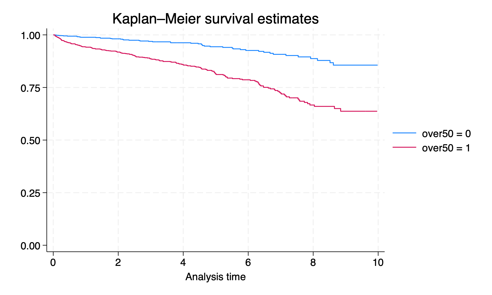

Lab 4#
Part 1#
Write a .do file which imports transplants.txt and performs the data management/exploratory data analysis tasks described below using the slides we have discussed in class. Your .do file (lab4_lastname.do) and must create a log file (lab4_lastname.log). This file will contain your answers for both part 1 and part 2 of today’s lab. Your .do file should follow conventions for .do file structure described in class. Do not submit your log files as part of the assignment.
Create a new variable called
ctr_volumethat contains the transplant center volume (total number of transplants performed in each transplant center). The transplant center can be identified byctr_id.
Just make sure that they did it
Use
summarize, detailto show the distribution ofctr_volume. For question 2, you should analyze one observation per center, not one observation per transplant recipient. (Hint: Tagging can help with this)
Percentiles Smallest
1% 8 8
5% 8 8
10% 26 26 Obs 25
25% 61 54 Sum of Wgt. 25
50% 79 Mean 80
Largest Std. Dev. 34.17358
75% 105 116
90% 127 127 Variance 1167.833
95% 128 128 Skewness -.5265107
99% 128 128 Kurtosis 2.662681
Generate a variable called
unknownwhich is a 1 for all patients whose cause of end-stage renal disease (ESRD) is unknown/uncertain/blank (extended_dgn= “ESRD UNKNOWN ETIOLOGY”, “ESRD OF UNCERTAIN ETIOLOGY”, etc.) and a zero for all other patients. Display the following sentence:
xxx of 2000 patients (yy.y%) have an unknown cause of ESRD.
Except fill in the correct numbers.
My count was 893 but this will be all over the map. Just give credit if they made a reasonable effort
How many patients died within six months of their transplant (died==1 and transplant date falls ≤ 180 days before end date)? Display the following sentence:
xxx of 2000 patients (yy.y%) died within 6 months of their transplant date.
Except fill in the correct numbers.
46/2.3%
For each blood type, what is the mean waiting time for a transplant? (variable: wait_yrs) What is the median waiting time for a transplant? Use egen, tagging, and list to display the blood type, mean wait time, and median wait time of each blood type so that only one record is displayed per blood type.
abo meanw medianw
1=A 1.989718 1.57974
2=B 2.609568 2.253251
3=AB 1.414879 1.045859
4=O 2.649108 2.313484
Lab 4 Part 2
Create a variable called
over50which is a 1 for any recipient age >50 and 0 for everyone else. Draw a survival curve stratified by over50.
Q: I have a Stata dataset with transplant_date as a string in DMY format. how may I convert it to a standard date (i.e. 0=01jan1960)?
chatGPT: To convert a string variable representing dates in the “DMY” format to a standard date format in Stata, you can use the following steps:
\(\vdots\)
gen transplant_date_num = date(transplant_date, "DMY")
format transplant_date_std %td
Q: Danke
chatGPT: Gern geschehen! Wenn Sie weitere Fragen haben, stehe ich Ihnen gerne zur Verfügung.
import delimited https://raw.githubusercontent.com/jhustata/livre/main/transplants.txt, clear
g over50=age>50 if !missing(age)
g transplant_date_num = date(transplant_date, "DMY")
format transplant_date_num %td
format end_date %td
order transplant_date_num end_date
stset end_date,origin(transplant_date_num) entry(transplant_date_num) fail(died) scale(365.25)
sts graph, by(over50)
graph export lab4q7.png, replace

Is the difference in post-transplant survival by over50 statistically significant (p>0.05)? Write one of the following sentences:
There is a statistically significant difference in survival by age category (p<0.05)
or
There is no statistically significant difference in survival by age category (p=0.x)
Run a Cox regression on over50 (command
stcox over50). Print this sentence:
Hazard ratio: x.xx (95% CI y.yy-z.zz)
3.44 (2.50-4.76)
Except fill in the correct values.
use transplants, clear
//q1, 10pt
bys ctr_id: gen ctr_volume= _N
//q2, 10pt
bys ctr_id: gen tx_id = _n
egen ctr_tag = tag(ctr_id )
summarize ctr_volume if ctr_tag==1, detail
//q3, 20pt ; give a full 20 to any N>800
tab extended_dgn
gen unknown=0
replace unknown=1 if regexm(ext, "UNCERTAIN") | regexm(ext, "BLANK") | regexm(ext, "NO REPORT") | regexm(ext, "^NOT SPECI") | regexm(ext, "NA$") | regexm(ext, "UNK") | regexm(ext, "UNCLEAR") | regexm(ext, "UNDET") | regexm(ext, "U$") | regexm(ext, "OTHER") | regexm(ext, "ETIOLOGY$") | regexm(ext, "COMPLEX CAUSES") | regexm(ext, "UNOS 999") | regexm(ext, "UKNOWN")
tab extended_dgn unknown
tab unknown
count if unknown==1
display r(N)
disp (r(N)/(_N)*100)
disp r(N) " of 2000 patients (" %2.1f (r(N)/(_N)*100) "%) have an unknown cause of ESRD."
//q4, 10pt
format end_date %tdnn/dd/CCYY
gen died_180=0
replace died_180=1 if died==1 & ( end_date- transplant_date<=180)
count if died_180==1
display r(N)
disp (r(N)/(_N)*100)
disp r(N) " of 2000 patients (" %2.1f (r(N)/(_N)*100) "%) died within 6 months of their transplant date."
//q5, 10pt
sort abo
egen abotag = tag(abo)
bys abo: egen mean_time = mean(wait_yrs)
bys abo: egen median_time = median(wait_yrs)
list abo mean_time median_time if abotag==1, noobs
//q6, 10pt
gen over50=0
replace over50=1 if age>50
assert age!=.
stset end_date, origin(transplant_date) failure(died==1) scale (365.25)
sts graph, by(over50) t
//q7, 15pt
sts test over50
scalar p=(1-chi2(r(df), r(chi2)))
if p < 0.05 {
disp "There is a statistically significant difference in survival by age category (p<0.05)"
}
if p > 0.05 {
disp "There is no statistically significant difference in survival by age category (p=" p ")"
}
//q8, 15pt
qui stcox over50
if c(version) < 16 {
disp "Hazard ratio: " %3.2f exp(_b[over50]) " (95% CI " ///
%3.2f exp(_b[over50]+invnormal(0.025)*_se[over50]) ///
"-" %3.2f exp(_b[over50]+invnormal(0.975)*_se[over50]) ")"
}
else {
qui lincom over50
disp "Hazard ratio: " %3.2f exp(r(estimate)) " (95% CI " ///
%3.2f exp(r(lb)) ///
"-" %3.2f exp(r(ub)) ")"
}